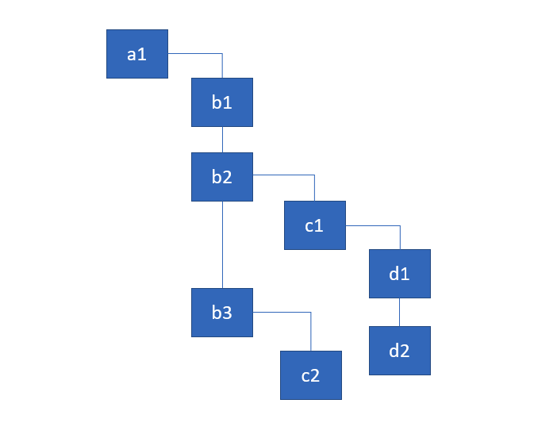
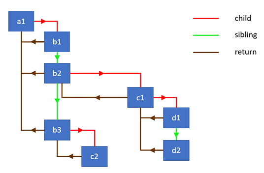

react fiber用单链表遍历组件数
本文译自The how and why on React’s usage of linked list in Fiber to walk the component’s tree
在 react 中，变化的检测机制通常被叫做 “协调 或 渲染”，fiber 是它的最新实现，其实这个概念早在 2017年的时候就已经提出来了。 由于react的底层架构，它提供了很多有趣的特性，比如说 非阻塞渲染，背后的根据优先级来进行更新 和 二次渲染，也就是 react 哲学中的 时间分片概念。
原文作者还提到，react的新特性除了解决了开发者遇到的一些实际问题外，从工程的角度来说，内部的实现机制 非常具有吸引力，年轻的开发者们学习了解后 会变成更优秀的开发者
基础知识
Fiber的架构有两个主要阶段：协调/渲染和提交。在源码中，协调阶段通常被称为“渲染阶段”。这是React遍历组件树的阶段，并且：
- 更新状态和属性
- 调用生命周期钩子
- 获取组件的children
- 将它们与之前的children进行对比
- 并计算出需要执行的DOM更新
上面这些动作 都是fiber 内部的工作流程。但实际需要做的事情 其实取决于 react element 的类型，比如，class component ，react 需要实例化一个类，但对于 functional component 则不需要。这里，可以查看 fiber 中所有类型的工作目标。
上述概念 也是 Andrew 所说到的：
处理更新 UI 时，问题在于如果一次执行太多的操作，会导致动画掉帧。。。
所以 啥是 ‘一次执行’的部分？ 简单来说，如果 react 同步遍历整个组件树，然后对于每个组件执行操作，大概要花费至少 16 毫秒 的时间来处理应用逻辑，这将会导致丢帧，视觉效果不顺畅。
那咋办呢？
较新的浏览器版本 实现了可以解决这个问题的API。。。
这里提到 新的API 就是 requestIdleCallback 全局函数，可将函数放入队列中，在浏览器空闲时段再执行。可以这么用：
1 | requestIdleCallback((deadline) => { |
如果我们打开控制台 并执行上述代码，会得到：
1 | 47 |
上述的意思是 浏览器会给我们 14.4 毫秒的时间去做任何想做的事，且 还有没用完所有分配的时间，看 false 的标志，如果时间用完了， deadline.didTimeout 会变成 true。 时刻牢记 及时检查 timeRemaining ，因为时间一用完 就会更新这个值。
requestIdleCallback虽好，但有一点吧，它过于严格，而且不能特别频繁的调用，这样UI 不能保持流畅，所以，react 团队 还是要实现自己的版本
想象一下 如果我们将 react 里 在一个组件上的所有活动事件放到 performword 函数里面，然后用 requestIdleCallback 来管理，代码可能长这个样子：
1 | requestIdleCallback((deadline) => { |
如果我们在一个组件上 执行操作 然后返回下一个组件的引用，如果一个一个组件更新这样，这个方法是有效可用的，但是这样的话 我们就没办法同步的更新整个组件树。
像 Andrew 说的，为了用这些API， 我们必须找到一个方法将渲染工作分解为增量单元工作。
所以，为了解决这个问题，react 团队必须重新实现遍历树的算法，从依赖于内置调用栈的同步递归模型，变为具有链表和指针的异步模型。
如果我们只依赖内置的调用栈，它会一直工作工作 直到调用栈空了。。。
如果我们可以随意中断调用栈，然后手动操作调用帧，那岂不是快哉？
嗯 者就是 react fiber 的目的。
Fiber 是调用栈的二次实现，专供react 组件使用。我们可以将单个 Fiber 视为一个虚拟调用栈。
顺便插一嘴调用栈 stack
我假设你们都熟悉调用堆栈的概念。如果你在断点处暂停代码，则可以在浏览器的调试工具中看到这一点。以下是维基百科的一些相关引用和图表：
在计算机科学中，调用堆栈是一种堆栈数据结构，它存储有关计算机程序的活跃子程序的信息…调用堆栈存在的主要原因是跟踪每个活跃子程序在完成执行时应该返回控制的位置…调用堆栈由堆栈帧组成…每个堆栈帧对应于一个尚未返回终止的子例程的调用。例如，如果由子程序DrawSquare调用的一个名为DrawLine的子程序当前正在运行，则调用堆栈的顶部可能会像在下面的图片中一样。

调用栈 和 react 的关系
React 在协调/渲染阶段 会遍历整个组件树，并且给组件执行一些操作。协调器的先前实现使用依赖于内置堆栈的同步递归模型来遍历树。关于协调的官方文档描述了这个过程，并谈了很多关于递归的内容：
默认情况下，当递归 DOM 节点的子节点时，React 会同时便利两个子节点列表，并在出现差异时作出更新
如果我们考虑下，每个递归调用都会像对战添加一个帧，且是同步的。假设组件树长这样

用render函数表示为对象。你可以把它们想象成组件实例：
1 | const a1 = {name: 'a1'}; |
react 要遍历树然后执行些操作。 这里简化一下，我们只输出 每个节点的名称。
1 | walk(a1); |
然后 我们会得到输出：a1, b1, b2, c1, d1, d2, b3, c2；
递归方法直观，非常适合遍历树。但是正如我们发现的，它有局限性。最大的一点就是我们无法分解工作为增量单元。我们不能暂停特定组件的工作并在稍后恢复。通过这种方法，React只能不断迭代直到它处理完所有组件，并且堆栈为空。
那么React如何实现算法在没有递归的情况下遍历树？它使用单链表树遍历算法。它使暂停遍历并阻止堆栈增长成为可能。
链表遍历
为实现这一算法，我开门定义三个节点类型：
- child — 第一个子节点的引用
- sibling — 第一个兄弟节点的引用
- return — 父节点的引用
在React新的协调算法的上下文中，包含这些字段的数据结构称为Fiber。在底层它是一个代表保持工作队列的React Element。更多内容见我的下一篇文章。
下图展示了通过链表链接的对象的层级结构和它们之间的连接类型：

我们首先定义我们的自定义节点的构造函数：
1 | class Node { |
以及获取节点数组并将它们链接在一起的函数。我们将它用于链接render方法返回的子节点：
1 | function link(parent, elements) { |
该函数从最后一个节点开始往前遍历节点数组，将它们链接在一个单独的链表中。它返回第一个兄弟节点的引用。
这是一个如何工作的简单演示：
1 | const children = [{name: 'b1'}, {name: 'b2'}]; |
我们还将实现一个辅助函数，为节点执行一些工作。在我们的情况是，它将打印组件的名字。但除此之外，它也获取组件的children并将它们链接在一起：
1 | function doWork(node) { |
好的，现在我们已经准备好实现主要遍历算法了。这是父节点优先，深度优先的实现。这是包含有用注释的代码：
1 | function walk(o) { |
虽然代码实现并不是特别难以理解，但你可能需要稍微运行一下代码才能理解它。在这里做。 思路是保持对当前节点的引用，并在向下遍历树时重新给它赋值，直到我们到达分支的末尾。然后我们使用return指针返回根节点。
动画看一下实现的调用栈：
同时 我们向下遍历树时，调用栈不会增长，下图是我们的打印结果：
React 中的循环
React 中实现循环的部分代码如下：
1 | function workLoop(isYieldy) { |
那么 这个算法可以同步的遍历整个组件树，同时在每个fiber节点（nextUnitOfWord） 执行相应操作，这种操作一般称为 UI 事件（点击，输入等操作） 引起的交互更新。或者它可以异步地遍历组件树，检查在执行Fiber节点工作后是否还剩下时间。